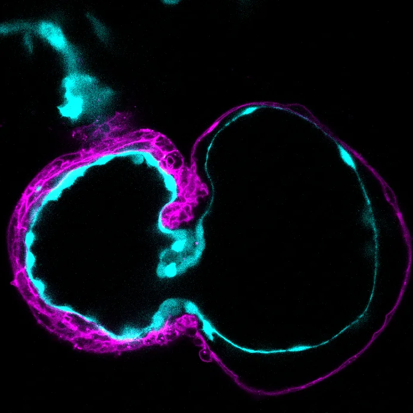
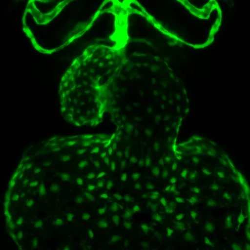
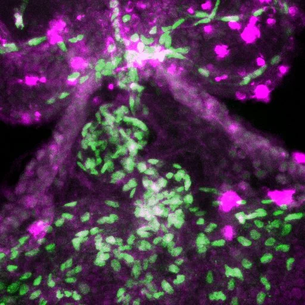
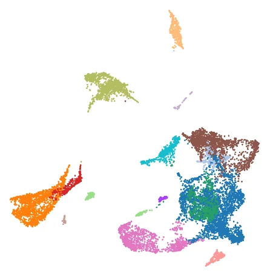

01
Mechanosensation in the endocardium
The endocardium is the first cardiac tissue to experience blood flow. We showed that cardiac contractions maintain endocardial identity by locally repressing a venous fate.
We now ask which mechanosensors detect these forces in endocardial cells, and how their signals reach the genome.



